建築資材・住宅資材
Z金物・連結釘・2×4金物・接合金物・コーススレッド・点検口・床下物入・カーテンレール・物干金物・デッキ材・住宅サッシ・内装ドア・床材・タイベック・スタイロフォーム・ポリエチレンフィルム
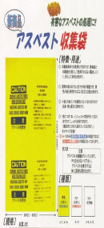
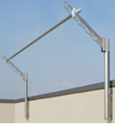
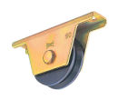
 CONTACTお問い合わせ
CONTACTお問い合わせPRODUCTS & MATERIALS
建築・土木総合資材・仮設資材・住宅機器・金物・作業工具を取り扱っています。
Z金物・連結釘・2×4金物・接合金物・コーススレッド・点検口・床下物入・カーテンレール・物干金物・デッキ材・住宅サッシ・内装ドア・床材・タイベック・スタイロフォーム・ポリエチレンフィルム



ねじ、ボルト・作業工具・測定用品・電動工具・大工道具・左官道具・板金用具・切削工具・荷役、梱包用品・運搬用品・安全、保安用品・メンテナンス用品・清掃用品・文具、雑貨用品・現場用雑貨・ショベル、スコップ・一輪車・養生材・マンガ標識・除雪用具・工事看板・暖房機器
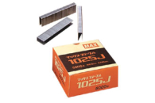
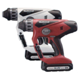
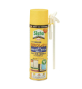
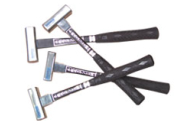
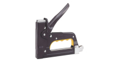
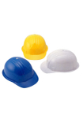
システムキッチン・流し台・洗面化粧台・システムバス・浴槽・業務用調理器・給湯機器・カスケード・ガレージ・物置・カーポート・自転車置場・サイクルスタンド・門柱・門扉・ガーデンフェンス
看板工事・機械器具設置工事・サイディング工事・ALC工事
組立ハウス・ユニットハウス・仮囲鋼板・仮設ゲート・枠組足場・単管足場・ローリングタワー・パイプサポート・脚立、梯子・帆布・ネットフレーム・ゴンドラ・保護シート・養生ネット・型枠用合板・曲面成型合板・塗装合板・紙製型枠・型枠金物・面木、目地棒
ガードレール・ガードケーブル・視線誘導標・道路標語板・上下水道材・土木安定シート・蛇かご・のり面保護材・落下防止網・高欄・暗渠後排水管・塩ビ止水管・ウィップホール・遮水シート・生芝・人工芝・遊器具・公園用安全器材・ネットフェンス・格子フェンス・防球ネット
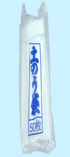
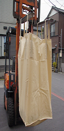
異形棒鋼・鉄筋加工・溶接金網・スパイラルフープ・PC鋼棒・スタッドジベル・ワイヤーロープ・H形鋼・山形鋼・溝形鋼・コラム・鋼管・鋼板・C形鋼・鉄線・亜鉛メッキ鋼泉・ナマシ線・丸釘・カラーコイル・亜鉛鉄板・グレーチング
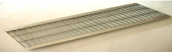
セメント・生コンクリート・モルタル・PHCパイル・PC板・基礎ブロック・コンクリート製品・化粧敷板・御影石製品・骨材・砂・インターロッキング・ブロック・AE材・減水材・急結材・防水材・流動化材・ポゾリス